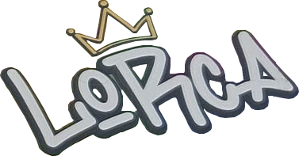
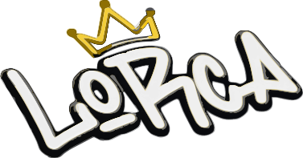

Vectorizado directamente del PNG: se rastrean los contornos reales del recorte a 4× de resolución y se reconstruyen como 28 capas de color apiladas de oscura a clara — silueta, sombra, relleno, brillos y corona incluidos. No hay ningún trazo redibujado a mano, así que la forma es la de tu archivo. Pesa 230 KB y se ve nítido a cualquier tamaño.